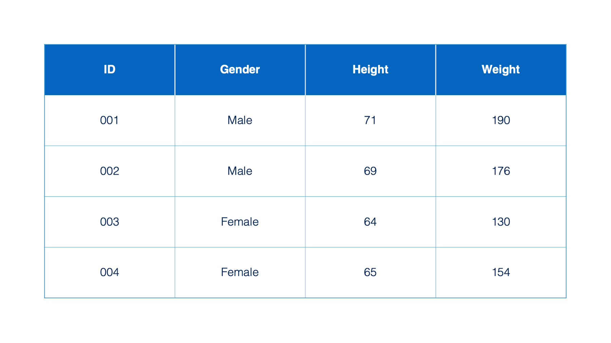
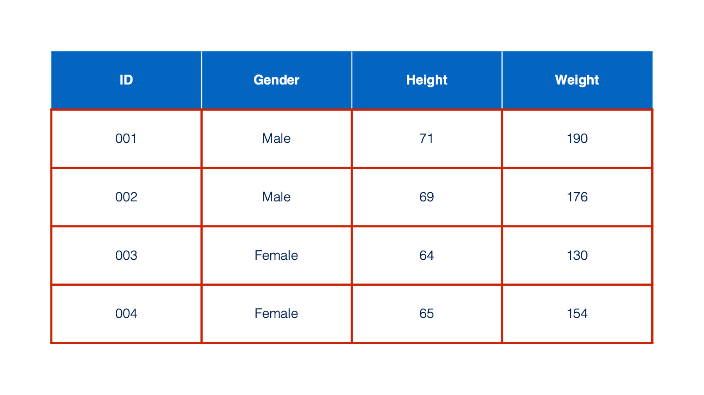
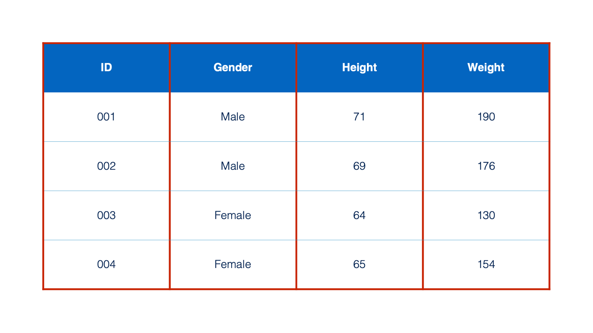
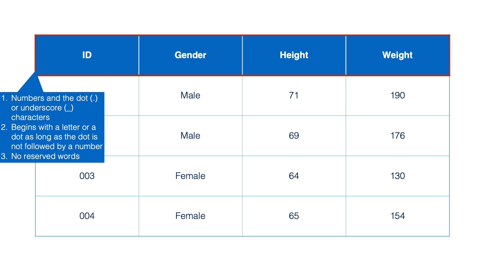
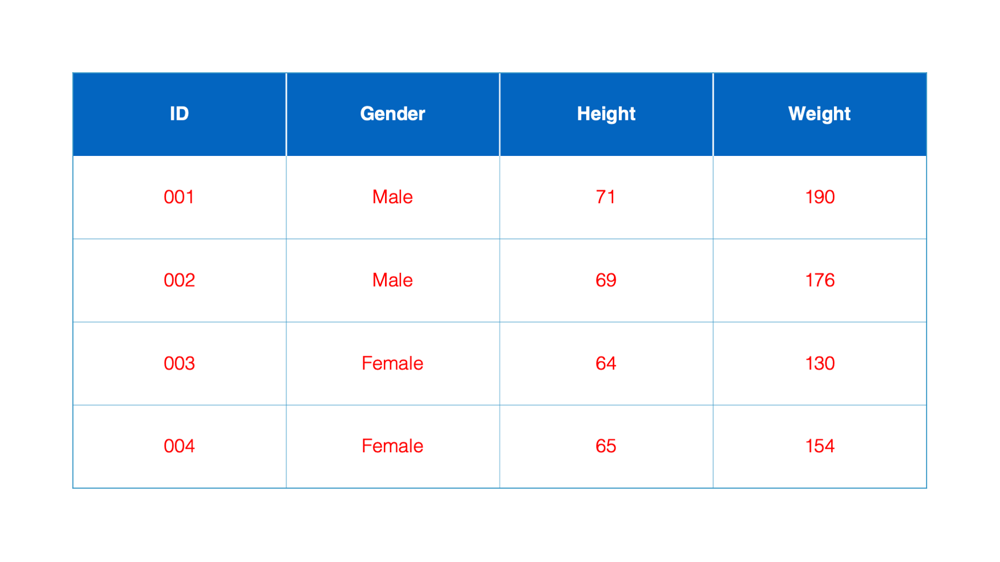
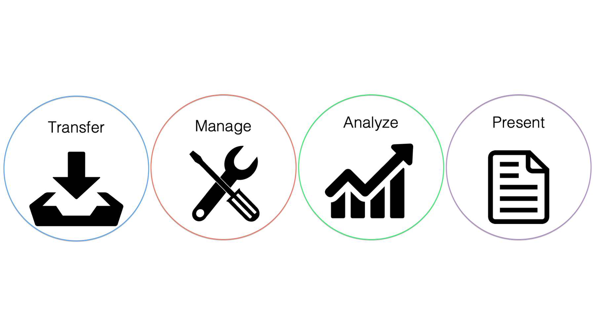
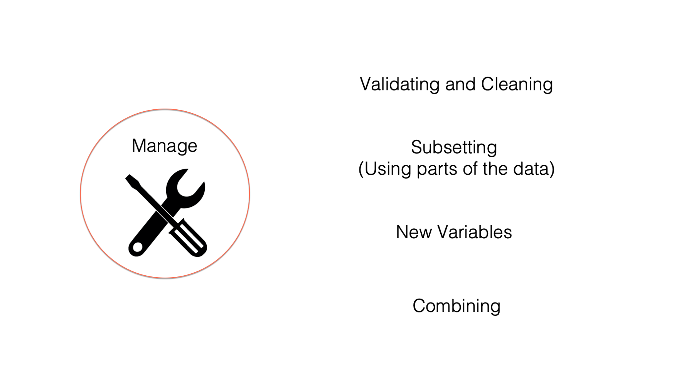
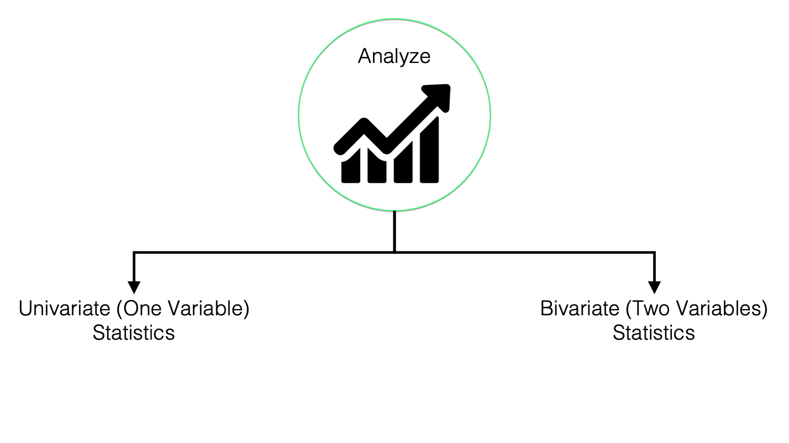
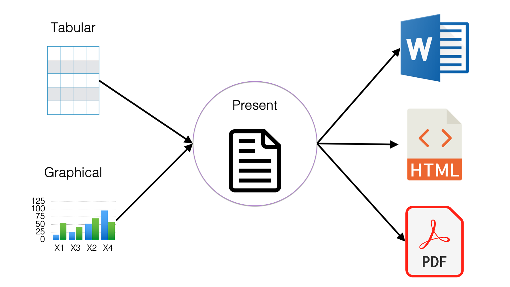

2 What is R?
At this point in the book, you should have installed R and RStudio on your computer, but you may be thinking to yourself, “I don’t even know what R is.” Well, in this chapter you’ll find out. We’ll start with an overview of the R language, and then briefly touch on its capabilities and uses. You’ll also see a complete R program and some complete documents generated by R programs. In this book you’ll learn how to create similar programs and documents, and by the end of the book you’ll be able to write your own R programs and present your results in the form of an issue brief written for general audiences who may or may not have public health expertise. But, before we discuss R let’s discuss something even more basic – data. Here’s a question for you: What is data?
2.1 What is data?
Data is information about objects (e.g., people, places, schools) and observable phenomenon (e.g., weather, temperatures, and disease symptoms) that is recorded and stored somehow as a collection of symbols, numbers, and letters. So, data is just information that has been “written” down.
Here we have a table, which is a common way of organizing data. In R, we will typically refer to these tables as data frames.
Each box in a data frame is called a cell.

Moving from left to right across the data frame are columns. Columns are also sometimes referred to as variables. In this book, we will often use the terms columns and variables interchangeably. Each column in a data frame has one, and only one, type. For now, know that the type tells us what kind of data is contained in a column and what we can do with that data. You may have already noticed that 3 of the columns in the table we’ve been looking at contain numbers and 1 of the columns contains words. These columns will have different types in R and we can do different things with them based on their type. For example, we could ask R to tell us what the average value of the numbers in the height column are, but it wouldn’t make sense to ask R to tell us the average value of the words in the Gender column. We will talk more about many of the different column types exist in R later in this book.

The information contained in the first cell of each column is called the column name (or variable) name.
R gives us a lot of flexibility in terms of what we can name our columns, but there are a few rules.
- Column names can contain letters, numbers and the dot (.) or underscore (_) characters.
- Additionally, they can begin with a letter or a dot – as long as the dot is not followed by a number. So, a name like “.2cats” is not allowed.
- Finally, R has some reserved words that you are not allowed to use for column names. These include: “if”, “else”, “repeat”, “while”, “function”, “for”, “in”, “next”, and “break”.

Moving from top to bottom across the table are rows, which are sometimes referred to as records.
Finally, the contents of each cell are called values.

We should now be up to speed on some basic terminology used by R, as well as other analytic, database, and spreadsheet programs. These terms will be used repeatedly throughout the book.
2.2 What is R?
So, what is R? Well, R is an open source statistical programming language that was created in the 1990’s specifically for data analysis. We will talk more about what open source means later, but for now, just think of R as an easy (relatively 😂) way to ask our computer to do math and statistics for us. More specifically, by the end of this book we will be able to independently use R to transfer data, manage data, analyze data, and present the results of our analysis. Let’s quickly take a closer look at each of these.

2.2.1 Transferring data

So, what do we mean by “transfer data”? Well, individuals and organizations store their data using different computer programs that use different file types. Some common examples that we may come across in epidemiology are database files, spreadsheets, raw data files, and SAS data sets. No matter how the data is stored, we can’t do anything with it until we can get it into R, in a form that R can use, and in a location that R can access.
2.2.2 Managing data

This isn’t very specific, but managing data is all the things we may have to do to our data to get it ready for analysis. Some people also refer to this process as “data wrangling” or “data munging.” Some specific examples of data management tasks include:
- Validating and cleaning data. In other words, dealing with potential errors in the data.
- Subsetting data – using only some of the columns or some of the rows.
- Creating new variables. For example, we might want to create a new
BMIvariable from existingheightandweightvariables.
- Combining data frames. For example, we might want to combine a data frame containing sociodemographic data about study participants with a data frame containing intervention outcomes data about those same participants.
We may sometimes hear people refer to the 80/20 rule about data management. This “rule” says that in a typical data analysis project, roughly 80% of our time will be spent on data management, while only 20% will be spent on the analysis itself. We can’t provide you with any empirical evidence (i.e., data) to back this claim up. But as people who have been involved in many projects that involve the collection and analysis of data, we can tell you anecdotally that this ”rule” is probably pretty close to being accurate in most cases.
Additionally, it’s been our experience that most students of epidemiology are required to take one or more courses that emphasize methods for analyzing data; however, almost none of them have taken a course that emphasizes data management.
Therefore, because data management is such a large component of most projects that involve the collection and analysis of data, and because most readers will have already been exposed to data analysis to a much greater extent than data management, this book will start by heavily emphasizing the latter.
2.2.3 Analyzing data

As discussed above, this is probably the capability most people most closely associate with R, and there is no doubt that R is a powerful tool for analyzing data. However, in this book we won’t go beyond using R to calculate basic descriptive statistics. For our purposes, descriptive statistics include:
- Measures of central tendency. For example, mean, median, and mode.
- Measures of dispersion. For example, variance and standard error.
- Measures for describing categorical variables. For example, counts and percentages.
- Describing data using graphs and charts. With R, we can describe our data using beautiful and informative graphs.
2.2.4 Presenting data

And finally, the ultimate goal is typically to present our findings in some form or another. For example, a report, a website, or a journal article. With R we can present our results in many different formats with relative ease. In fact, this is one of our favorite things about R and RStudio. In this book we will learn how to publish our text, tabular, or graphical results in many different formats including Microsoft Word documents, html files that can be viewed in web browsers, and pdf documents. Let’s take a look at some examples.
Microsoft Word documents: Click here to view an example Word document created with R and the
officedownpackage.PDF documents: Click here to view a gallery of documents, including PDF.
HTML files: HTML (HyperText Markup Language) is the standard format for web pages. R can create HTML files that can be shared via email or published online for others to view in their browser. Click here to browse a gallery of interactive dashboards built with R.
Web applications: R can even be used to build full-featured web applications. Click here to explore examples created with the Shiny package.
Now that we’ve explored what R is and how it can be used in public health and the health sciences, it’s time to start learning how to actually use it. In the next chapter, Navigating the RStudio Interface, we’ll begin by exploring the RStudio IDE and briefly introduce some of the basic building blocks of R code.